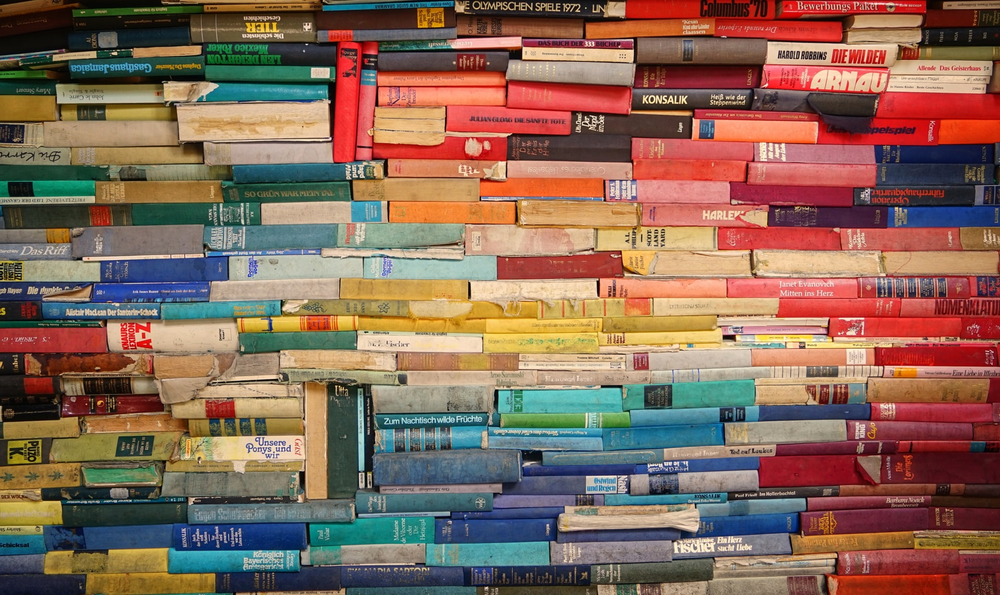
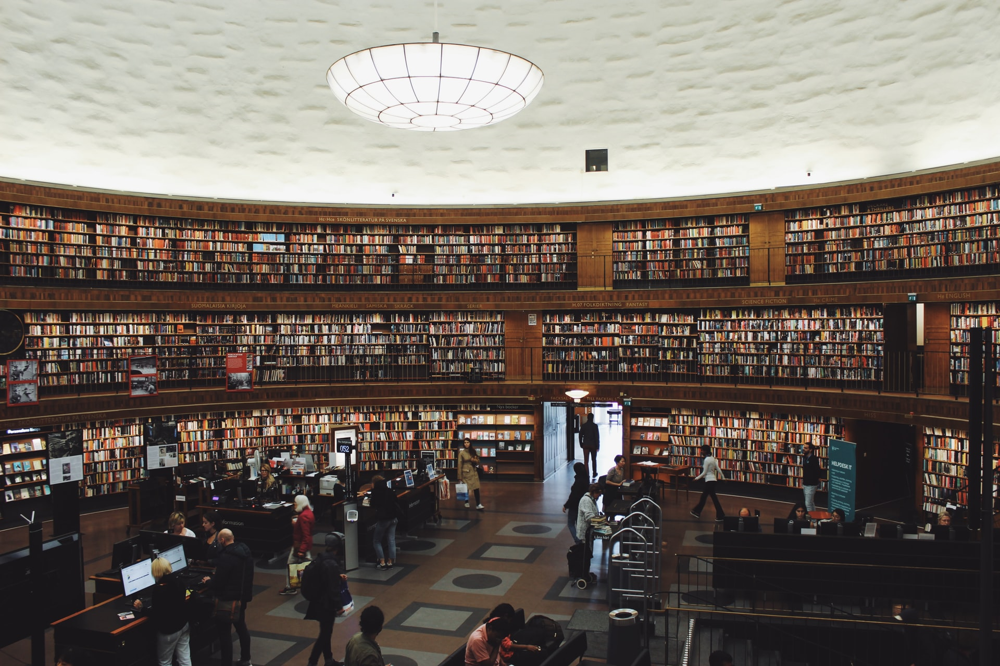

A. Informasi

Gambar 1.1
Informasi adalah data yang telah diproses ke dalam suatu bentuk yang mempunyai arti bagi si penerima
dan mempunyai nilai nyata dan terasa bagi keputusan saat itu dan keputusan mendatang. Informasi
adalah sebuah istilah yang tidak tepat pemakaianya secara umum. Informasi dapat berisi data mentah,
data tersusun, kapasitas sebuah saluran komunikasi dann sebagainya. Informasi ibarat darah yang
mengalir di dalam tubuh suatu organisasi sehingga keberadaan informasi ini menjadi sangat penting.
Suatu organisasi yang kurang mendapatkan informasi akan menjadi luruh, kerdil, dan akhirnya mati.
Di lain pihak, informasi dikatakan sebagai sekumpulan data yang dikomunikasikan dalam bentuk yang
dapat dipahami. Informasi merupakan konten dari berbagai format, misalnya informasi yang tertulis
atau tercetak ,disimpan dalam database atau terkumpul dalam suatu internet.
Informasi yang baik adalah informasi yang memiliki makna atau dengan kata lain sesuai dengan
kebutuhan penerima. Informasi memiliki nilai-nilai sebagai berikut:
- Benar dan Salah. Artinya, informasi selalu berhubungan dengan kebenaran dari suatu
kenyataan. Jika informasi salah dipercayai, dampaknya sama dengan jika informasi itu benar
- Baru. Artinya, informasi merupakan kebaruan bagi penerimanya
- Tambahan. Artinya, informasi bisa berupa perbaruan atau perubahan dari informasi sebelumnya.
- Korektif. Artinya, informasi bisa untuk melakukan koreksi pada informasi sebelumnya yang
salah.
- Penegas. Artinya, informasi dapat memberikan penegasan bagi informasi sebelumnya sehingga
meningkatkan keyakinan penerima
B. Perpustakaan
Gambar 1.2
-
Perpustakaan Sebagai Sumber Informasi
Perpustaakan sebagai sumber daya informasi menjadi tulang punggung gerak majunya
suatu institusi,
tempat tuntunan untuk adapatasi terhadap perkembangan informasi yang sangat tinggi. Hal ini
dikarenakan pengguna (user) dominan dari kalangan akademis yang kebutuhannya akan
informasi
begitu kuat sehingga mau tidak mau perpustakaan harus pula berpikir untuk berupaya mengembangkan
diri guna memenuhi kebutuhan pengguna (user).
Perpustakaan seperti sebuah "Permata" yang hilang dan telah ditemukan. Dulu,
perpustakaan telah ada
bahkan jika ada sekolah, di situ perpustakaan berada. Akan tetapi, perpustakaan dulu hanya
sebagai
tempat buku saja, bahkan mungkin hanya sebagai pelengkap dunia pendidikan. Tradisi disekitar
buku
dan jurnal tercetak ini luar biasa tertanam dalam budaya masyarakat, yang membentuk sebuah
"dunia
teks" yang melandasi semua upaya manusia memperluas ilmu pengetahuannya. Beberapa dasawarsa
terakhir
ini, dunia teks mendapat tantangan dari teknologi-teknologi baru. Sejalan dengan berkembangnya
ilmu
pengetahuan dan teknologi, perpustakaan pun ternyata tidak luput dari perhatian pemerintah yang
selama ini me-nomorsekian-kan perpustakaan. Perpustakaan telah menemukan jati dirinya sebagai
agen
perubahan ( agent of change ), tempat berbagi informasi disimpan, dan tempat embrio
intelektual diciptakan. Betapa tidak, dulu perpustakaan yang dianggap sebagai tempat buku saja,
kini
berkembang menjadi pusat sumber daya informasi. Artinya, Perpustakaan tidak lagi sebagai
penyimpanan
buku semata, tetapi menjadi tempat pengguna ( user ) mampu memciptakan lagi sesuatu yang
mampu dibaca dan digunakan orang lain.
Konsekuensi perkembangan itu adalah tuntunan bagi perpustakaan untuk selalu berkembang pula
mengikutinya dengan berupaya memberikan layanan terbaik bagi pengguna. Perkembangan yang tampak
sekarang adalah mulai dari digalakannya perpustakaan digital. Di dalam perpustakaan digital ini,
koleksi yang dimiliki berupa informasi yang terekam dalam bentuk digital, dan aksesnya pun perlu
media yang bernama komputer. Akan tetapi, apa ke depan perpustakaan harus meninggalkan sistem
konvensionalnya? Atau, perpustakaan akan mendewakan digital sebagai alat angkut informasi yang
dimilikinya.
-
Perpustakaan Sebagai Pengelola Informasi
Perkembangan zaman saat ini ditandai dengan terjadinya perubahan yang sangat cepat,
perubahan
dalam
segala bidang kehidupan masyarakat. Perpusatakaan sebagai lembaga yang berorientasi melayani
masyarakat penggunanya harus tanggap dengan perubahan itu jika tidak ingin ditinggalkan.
Perpustakaan harus cepat beradaptasi dengan perkembangan yang terjadi, bukannya mengisolasi
diri
dalam dunianya. Setiap perpustakaan memiliki tanggung jawab dengan tuntutan profesionalisme
pengelolaan guna menjawab perkembangan zaman dan merespons serta berusaha memenuhi kebutuhan
pemakai
yang selalu berkembang. kesemuanya itu tidak sederhana dan tak pernah berakhir, tetapi akan
terus
berubah, berinovasi dan menyesuaikan dengan lingkungan kehidupan masyarakatnya. Peran
perpustakaan
di abad 21 sebagai berikut:
- Perpustakaan memberikan fasilitas akses terhadap sumber elektronik bagi mereka yang
tidak
memiliki akses itu secara fisik, termasuk reproduksinya.
- Perpustakaan membimbing pengguna untuk mencari dan memiliki informasi yang sesuai
dengan
kebutuhannya berdasarkan kemampuan profesionalisme yang dimiliki staf perpustakaan.
Asumsi
yang dipakai: tidak semua pencari informasi adalah pengguna dan tidak semua pengguna
dapat
memenuhi kebutuhan informasinya seorang diri, terutama bila subjek itu berada di
luar
bidang
yang dikuasainya.
- Perpustakaan mengoleksi, mengatalog, dan mengindeks bahan pustaka. Keterampilan
mengorganisasi informasi ini akan memberikan kemudahan untuk mengaksesnya, baik
untuk
informasi dalam bentuk tercetak maupun versi elektronik
C. Masyarakat

Gambar 1.3
-
Pengertian Masyarakat Informasi
Masyarakat informasi sebagai suatu masyarakat ketika kualitas hidup dan prospek untuk perubahan
sosial dan pembangunan ekonomi tergantung pada peningkatan informasi dan perubahannya. Dalam
masyarakat seperti ini, standar hidup, pola-pola kerja dan kesenangan, sistem pendidikan, dan
pemasaran barang-barang sangat dipengaruhi oleh akumulasi peningkatan informasi dan pengetahuan. Hal
ini dibuktikan dengan meningkatnya intensitas produksi informasi dan pelayanan, komunikasi yang luas
melalui media, dan banyak di antaranya dilakukan secara elektronis.
D. Peran Perpustakaan dalam Masyarakat Informasi
Gambar 1.4
Perubahan-perubahan yang timbul dalam perkembangan peradaban manusia dalam era
informasi telah merubah struktur kemasyarakatan dalam kehidupan umat manusia. Era informasi
mendorong tumbuhnya masyarakat informasi yang mana turut serta mendorong perubahan-perubahan
pada dimensi masyarakat yang terdapat di dalamnya. Perubahan-perubahan tersebut pada akhirnya
memunculkan golongan-golongan baru dalam stuktur masyarakat.
Dalam pelaksanaan upaya-upaya pemberdayaan sumber daya manusia dalam masyarakat
informasi, perpustakaan berusaha untuk berdiri sebagai posisi penengah di antara golongan
masyarakat kaya informasi dan masyarakat miskin informasi. Perpustakaan menjadi penjalin
kerjasama antara kedua golongan masyarakat informasi tersebut agar distribusi akses informasi bisa
lebih merata. Perpustakaan harus mampu menjalin kerjasama dengan golongan masyarakat kaya
informasi untuk berbagi informasi pada golongan masyarakat miskin informasi dan pada saat yang
sama mengedukasi golongan masyarakat miskin informasi untuk memperkaya informasi mereka
melalui perpustakaan. Dengan demikian, jurang informasi antara golongan masyarakat kaya informasi
dan golongan masyarakat miskin informasi tidak semakin luas, hal ini juga memberi dampak positif
pada pengurangan monopoli informasi serta perluasan kebebasan akses informasi bagi seluruh lapisan
tingkatan masyarakat dalam era informasi.